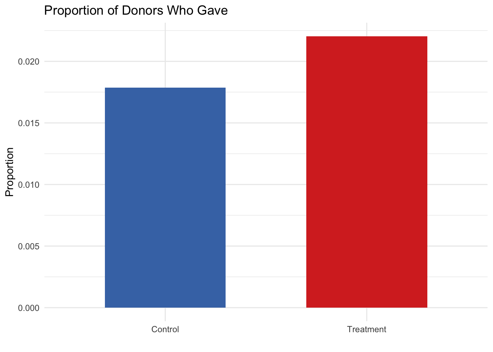
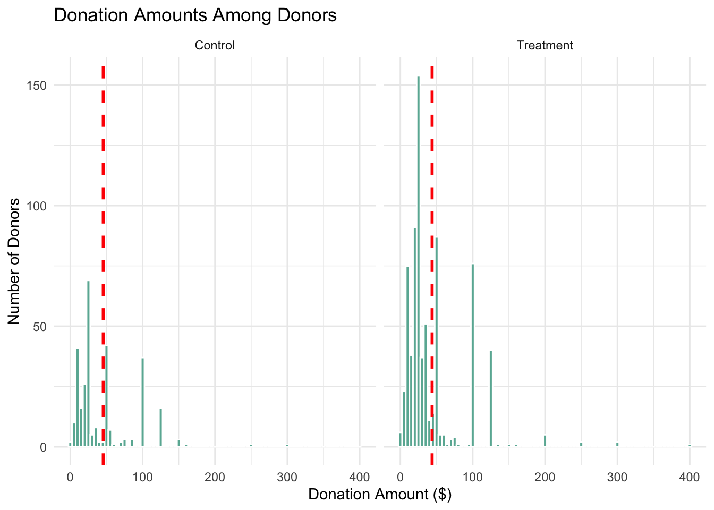
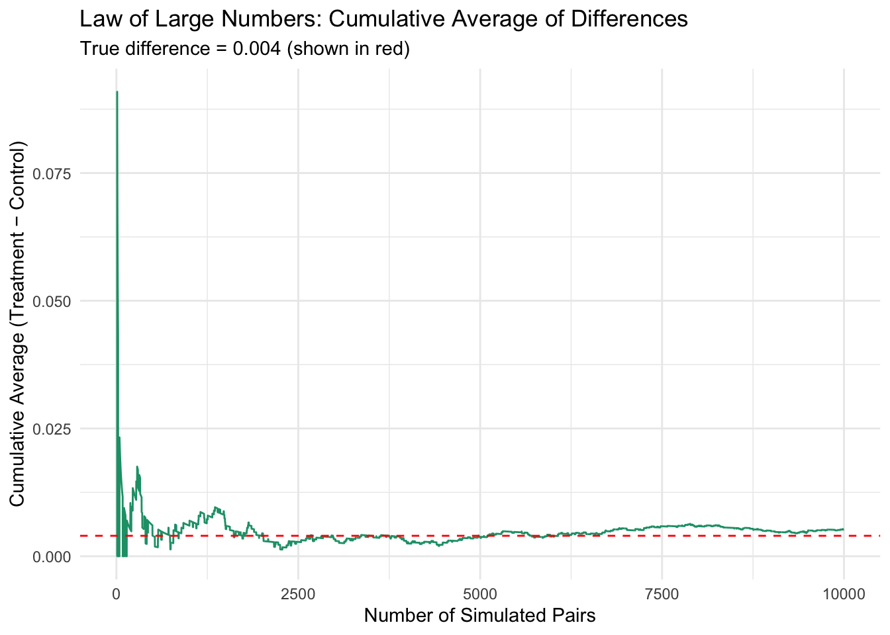
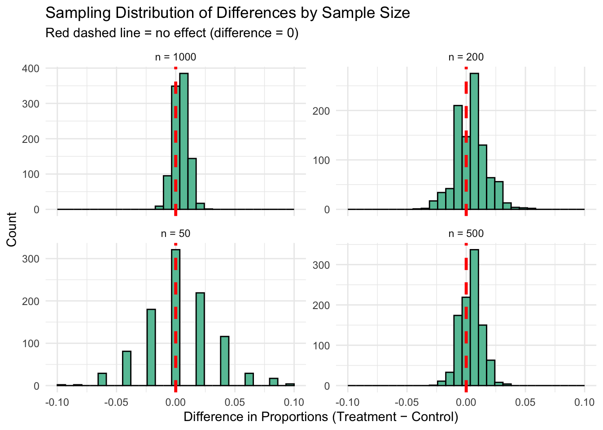

library(haven)
data <- read_dta("karlan_list_2007.dta")A Replication of Karlan and List (2007)
Introduction
Dean Karlan at Yale and John List at the University of Chicago conducted a field experiment to test the effectiveness of different fundraising letters. They sent out 50,000 fundraising letters to potential donors, randomly assigning each letter to one of three treatments: a standard letter, a matching grant letter, or a challenge grant letter. They published the results of this experiment in the American Economic Review in 2007. The article and supporting data are available from the AEA website and from Innovations for Poverty Action as part of Harvard’s Dataverse.
to do: expand on the description of the experiment.
This project seeks to replicate their results.
Data
Description
#_todo: Read the data into R/Python and describe the data_
## Load libraries
library(haven)
library(dplyr)
Attaching package: 'dplyr'The following objects are masked from 'package:stats':
filter, lagThe following objects are masked from 'package:base':
intersect, setdiff, setequal, unionlibrary(ggplot2)
# Read the data
data <- read_dta("karlan_list_2007.dta")
# View structure of the dataset
str(data)tibble [50,083 × 51] (S3: tbl_df/tbl/data.frame)
$ treatment : num [1:50083] 0 0 1 1 1 0 1 1 1 1 ...
..- attr(*, "label")= chr "Treatment"
..- attr(*, "format.stata")= chr "%9.0g"
$ control : num [1:50083] 1 1 0 0 0 1 0 0 0 0 ...
..- attr(*, "label")= chr "Control"
..- attr(*, "format.stata")= chr "%9.0g"
$ ratio : dbl+lbl [1:50083] 0, 0, 1, 1, 1, 0, 1, 2, 2, 1, 1, 2, 0, 2, 0, 1, 3, 3...
..@ label : chr "Match ratio"
..@ format.stata: chr "%9.0g"
..@ labels : Named num 0
.. ..- attr(*, "names")= chr "Control"
$ ratio2 : num [1:50083] 0 0 0 0 0 0 0 1 1 0 ...
..- attr(*, "label")= chr "2:1 match ratio"
..- attr(*, "format.stata")= chr "%9.0g"
$ ratio3 : num [1:50083] 0 0 0 0 0 0 0 0 0 0 ...
..- attr(*, "label")= chr "3:1 match ratio"
..- attr(*, "format.stata")= chr "%9.0g"
$ size : dbl+lbl [1:50083] 0, 0, 3, 4, 2, 0, 1, 3, 4, 1, 4, 2, 0, 1, 0, 4, 1, 4...
..@ label : chr "Match threshold"
..@ format.stata: chr "%9.0g"
..@ labels : Named num [1:5] 0 1 2 3 4
.. ..- attr(*, "names")= chr [1:5] "Control" "$25,000" "$50,000" "$100,000" ...
$ size25 : num [1:50083] 0 0 0 0 0 0 1 0 0 1 ...
..- attr(*, "label")= chr "$25,000 match threshold"
..- attr(*, "format.stata")= chr "%9.0g"
$ size50 : num [1:50083] 0 0 0 0 1 0 0 0 0 0 ...
..- attr(*, "label")= chr "$50,000 match threshold"
..- attr(*, "format.stata")= chr "%9.0g"
$ size100 : num [1:50083] 0 0 1 0 0 0 0 1 0 0 ...
..- attr(*, "label")= chr "$100,000 match threshold"
..- attr(*, "format.stata")= chr "%9.0g"
$ sizeno : num [1:50083] 0 0 0 1 0 0 0 0 1 0 ...
..- attr(*, "label")= chr "Unstated match threshold"
..- attr(*, "format.stata")= chr "%9.0g"
$ ask : dbl+lbl [1:50083] 0, 0, 1, 1, 1, 0, 3, 3, 2, 2, 1, 3, 0, 2, 0, 1, 2, 3...
..@ label : chr "Suggested donation amount"
..@ format.stata: chr "%9.0g"
..@ labels : Named num [1:4] 0 1 2 3
.. ..- attr(*, "names")= chr [1:4] "Control" "1x" "1.25x" "1.50x"
$ askd1 : num [1:50083] 0 0 1 1 1 0 0 0 0 0 ...
..- attr(*, "label")= chr "Suggested donation was highest previous contribution"
..- attr(*, "format.stata")= chr "%9.0g"
$ askd2 : num [1:50083] 0 0 0 0 0 0 0 0 1 1 ...
..- attr(*, "label")= chr "Suggested donation was 1.25 x highest previous contribution"
..- attr(*, "format.stata")= chr "%9.0g"
$ askd3 : num [1:50083] 0 0 0 0 0 0 1 1 0 0 ...
..- attr(*, "label")= chr "Suggested donation was 1.50 x highest previous contribution"
..- attr(*, "format.stata")= chr "%9.0g"
$ ask1 : num [1:50083] 55 25 55 55 35 95 125 75 250 150 ...
..- attr(*, "label")= chr "Highest previous contribution (for suggestion)"
..- attr(*, "format.stata")= chr "%9.0gc"
$ ask2 : num [1:50083] 70 35 70 70 45 120 160 95 315 190 ...
..- attr(*, "label")= chr "1.25 x highest previous contribution (for suggestion)"
..- attr(*, "format.stata")= chr "%9.0gc"
$ ask3 : num [1:50083] 85 50 85 85 55 145 190 120 375 225 ...
..- attr(*, "label")= chr "1.50 x highest previous contribution (for suggestion)"
..- attr(*, "format.stata")= chr "%9.0gc"
$ amount : num [1:50083] 0 0 0 0 0 0 0 0 0 0 ...
..- attr(*, "label")= chr "Dollars given"
..- attr(*, "format.stata")= chr "%9.2f"
$ gave : num [1:50083] 0 0 0 0 0 0 0 0 0 0 ...
..- attr(*, "label")= chr "Gave anything"
..- attr(*, "format.stata")= chr "%9.0g"
$ amountchange : num [1:50083] -45 -25 -50 -25 -15 -45 -50 -65 -100 -125 ...
..- attr(*, "label")= chr "Change in amount given"
..- attr(*, "format.stata")= chr "%9.2fc"
$ hpa : num [1:50083] 45 25 50 50 25 90 100 65 200 125 ...
..- attr(*, "label")= chr "Highest previous contribution"
..- attr(*, "format.stata")= chr "%9.2fc"
$ ltmedmra : num [1:50083] 0 1 0 1 1 0 0 0 0 0 ...
..- attr(*, "label")= chr "Small prior donor: last gift was less than median $35"
..- attr(*, "format.stata")= chr "%9.0g"
$ freq : num [1:50083] 2 2 3 15 42 20 12 13 28 4 ...
..- attr(*, "label")= chr "Number of prior donations"
..- attr(*, "format.stata")= chr "%9.0g"
$ years : num [1:50083] 4 3 2 8 95 10 8 16 19 7 ...
..- attr(*, "label")= chr "Number of years since initial donation"
..- attr(*, "format.stata")= chr "%9.0g"
$ year5 : num [1:50083] 0 0 0 1 1 1 1 1 1 1 ...
..- attr(*, "label")= chr "At least 5 years since initial donation"
..- attr(*, "format.stata")= chr "%9.0g"
$ mrm2 : num [1:50083] 31 5 6 1 24 3 4 4 6 35 ...
..- attr(*, "label")= chr "Number of months since last donation"
..- attr(*, "format.stata")= chr "%9.0g"
$ dormant : num [1:50083] 1 0 0 0 1 0 0 0 0 1 ...
..- attr(*, "label")= chr "Already donated in 2005"
..- attr(*, "format.stata")= chr "%9.0g"
$ female : num [1:50083] 0 0 0 0 1 0 1 0 0 0 ...
..- attr(*, "label")= chr "Female"
..- attr(*, "format.stata")= chr "%9.0g"
$ couple : num [1:50083] 0 0 0 0 0 0 0 0 0 0 ...
..- attr(*, "label")= chr "Couple"
..- attr(*, "format.stata")= chr "%9.0g"
$ state50one : num [1:50083] 0 0 0 0 0 0 0 0 0 0 ...
..- attr(*, "label")= chr "State tag: 1 for one observation of each of 50 states; 0 otherwise"
..- attr(*, "format.stata")= chr "%9.0g"
$ nonlit : num [1:50083] 5 0 3 1 1 0 0 4 1 4 ...
..- attr(*, "label")= chr "Nonlitigation"
..- attr(*, "format.stata")= chr "%9.0g"
$ cases : num [1:50083] 4 2 1 2 1 0 1 3 1 3 ...
..- attr(*, "label")= chr "Court cases from state in 2004-5 in which organization was involved"
..- attr(*, "format.stata")= chr "%9.0g"
$ statecnt : num [1:50083] 4.5 2.98 9.61 3.28 2.3 ...
..- attr(*, "label")= chr "Percent of sample from state"
..- attr(*, "format.stata")= chr "%9.2f"
$ stateresponse : num [1:50083] 0.0199 0.0261 0.023 0.0207 0.0156 ...
..- attr(*, "label")= chr "Proportion of sample from the state who gave"
..- attr(*, "format.stata")= chr "%9.4f"
$ stateresponset : num [1:50083] 0.0195 0.0278 0.0222 0.0247 0.017 ...
..- attr(*, "label")= chr "Proportion of treated sample from the state who gave"
..- attr(*, "format.stata")= chr "%9.4f"
$ stateresponsec : num [1:50083] 0.0208 0.0225 0.0247 0.0127 0.0129 ...
..- attr(*, "label")= chr "Proportion of control sample from the state who gave"
..- attr(*, "format.stata")= chr "%9.4f"
$ stateresponsetminc: num [1:50083] -0.0013 0.00534 -0.00258 0.01202 0.00408 ...
..- attr(*, "label")= chr "stateresponset - stateresponsec"
..- attr(*, "format.stata")= chr "%9.4f"
$ perbush : num [1:50083] 0.49 0.465 0.408 0.465 0.525 ...
..- attr(*, "label")= chr "State vote share for Bush"
..- attr(*, "format.stata")= chr "%9.4f"
$ close25 : num [1:50083] 1 0 0 0 0 1 0 0 0 0 ...
..- attr(*, "label")= chr "State vote share for Bush between 47.5% and 52.5%"
..- attr(*, "format.stata")= chr "%9.0g"
$ red0 : num [1:50083] 0 0 0 0 1 1 1 0 1 0 ...
..- attr(*, "label")= chr "Red state"
..- attr(*, "format.stata")= chr "%9.0g"
$ blue0 : num [1:50083] 1 1 1 1 0 0 0 1 0 1 ...
..- attr(*, "label")= chr "Blue state"
..- attr(*, "format.stata")= chr "%9.0g"
$ redcty : num [1:50083] 0 1 0 1 0 1 1 0 1 0 ...
..- attr(*, "label")= chr "Red county"
..- attr(*, "format.stata")= chr "%9.0g"
$ bluecty : num [1:50083] 1 0 1 0 1 0 0 1 0 1 ...
..- attr(*, "label")= chr "Blue county"
..- attr(*, "format.stata")= chr "%9.0g"
$ pwhite : num [1:50083] 0.446 NA 0.936 0.888 0.759 ...
..- attr(*, "label")= chr "Proportion white within zip code"
..- attr(*, "format.stata")= chr "%9.4f"
$ pblack : num [1:50083] 0.5278 NA 0.0119 0.0108 0.1274 ...
..- attr(*, "label")= chr "Proportion black within zip code"
..- attr(*, "format.stata")= chr "%9.4f"
$ page18_39 : num [1:50083] 0.318 NA 0.276 0.279 0.442 ...
..- attr(*, "label")= chr "Proportion age 18-39 within zip code"
..- attr(*, "format.stata")= chr "%9.4f"
$ ave_hh_sz : num [1:50083] 2.1 NA 2.48 2.65 1.85 ...
..- attr(*, "label")= chr "Average household size within zip code"
..- attr(*, "format.stata")= chr "%9.2f"
$ median_hhincome : num [1:50083] 28517 NA 51175 79269 40908 ...
..- attr(*, "label")= chr "Median household income within zip code"
..- attr(*, "format.stata")= chr "%9.0gc"
$ powner : num [1:50083] 0.5 NA 0.722 0.92 0.416 ...
..- attr(*, "label")= chr "Proportion house owner within zip code"
..- attr(*, "format.stata")= chr "%9.4f"
$ psch_atlstba : num [1:50083] 0.325 NA 0.193 0.412 0.44 ...
..- attr(*, "label")= chr "Proportion who finished college within zip code"
..- attr(*, "format.stata")= chr "%9.4f"
$ pop_propurban : num [1:50083] 1 NA 1 1 1 ...
..- attr(*, "label")= chr "Proportion of population urban within zip code"
..- attr(*, "format.stata")= chr "%9.4f"# Optional: Basic donation outcome summary
data %>%
group_by(treatment) %>%
summarise(
response_rate = mean(gave),
avg_donation = mean(amount),
n = n()
)# A tibble: 2 × 4
treatment response_rate avg_donation n
<dbl> <dbl> <dbl> <int>
1 0 0.0179 0.813 16687
2 1 0.0220 0.967 33396Balance Test
As an ad hoc test of the randomization mechanism, I provide a series of tests that compare aspects of the treatment and control groups to assess whether they are statistically significantly different from one another.
#_todo: test a few variables other than the key outcome variables (for example, test months since last donation) to see if the treatment and control groups are statistically significantly different at the 95% confidence level. Do each as a t-test and separately as a linear regression, and confirm you get the exact same results from both methods. When doing a t-test, use the formula in the class slides. When doing the linear regression, regress for example mrm2 on treatment and look at the estimated coefficient on the treatment variable. It might be helpful to compare parts of your analysis to Table 1 in the paper. Be sure to comment on your results (hint: why is Table 1 included in the paper)._
# Load required packages
library(dplyr)
library(broom)
# Split data
treat <- filter(data, treatment == 1)
control <- filter(data, treatment == 0)
# Variable 1: Months since last donation (mrm2)
mean_diff_mrm2 <- mean(treat$mrm2) - mean(control$mrm2)
se_mrm2 <- sqrt(var(treat$mrm2)/nrow(treat) + var(control$mrm2)/nrow(control))
t_stat_mrm2 <- mean_diff_mrm2 / se_mrm2
# Variable 2: Highest previous contribution (hpa)
mean_diff_hpa <- mean(treat$hpa) - mean(control$hpa)
se_hpa <- sqrt(var(treat$hpa)/nrow(treat) + var(control$hpa)/nrow(control))
t_stat_hpa <- mean_diff_hpa / se_hpa
# Display t-stats
t_stat_mrm2[1] NAt_stat_hpa[1] 0.97043# Regress mrm2 (months since last donation) on treatment
model_mrm2 <- lm(mrm2 ~ treatment, data = data)
tidy(model_mrm2)# A tibble: 2 × 5
term estimate std.error statistic p.value
<chr> <dbl> <dbl> <dbl> <dbl>
1 (Intercept) 13.0 0.0935 139. 0
2 treatment 0.0137 0.115 0.119 0.905# Regress hpa (highest previous contribution) on treatment
model_hpa <- lm(hpa ~ treatment, data = data)
tidy(model_hpa)# A tibble: 2 × 5
term estimate std.error statistic p.value
<chr> <dbl> <dbl> <dbl> <dbl>
1 (Intercept) 59.0 0.551 107. 0
2 treatment 0.637 0.675 0.944 0.345Table 1 in Karlan & List (2007) reports summary statistics by treatment and control to:
Show that randomization succeeded — groups look balanced.
Build confidence that observed outcome differences are due to the treatment, not confounders.This is standard in field experiments and pre-registered RCTs — a “sanity check” for the experiment’s internal validity.
Experimental Results
Charitable Contribution Made
First, I analyze whether matched donations lead to an increased response rate of making a donation.
#_todo: make a barplot with two bars. Each bar is the proportion of people who donated. One bar for treatment and one bar for control._
library(ggplot2)
# Create proportion data
response_rate <- data %>%
group_by(treatment) %>%
summarise(prop_gave = mean(gave)) %>%
mutate(group = ifelse(treatment == 1, "Treatment", "Control"))
# Plot
ggplot(response_rate, aes(x = group, y = prop_gave, fill = group)) +
geom_col(width = 0.6, show.legend = FALSE) +
labs(
title = "Proportion of Donors Who Gave",
x = "",
y = "Proportion"
) +
scale_fill_manual(values = c("#4575b4", "#d73027")) +
theme_minimal()
#_todo: run a t-test between the treatment and control groups on the binary outcome of whether any charitable donation was made. Also run a bivariate linear regression that demonstrates the same finding. (It may help to confirm your calculations match Table 2a Panel A.) Report your statistical results and interpret them in the context of the experiment (e.g., if you found a difference with a small p-value or that was statistically significant at some threshold, what have you learned about human behavior? Use mostly English words, not numbers or stats, to explain your finding.)_
# T-test (manual)
treat_gave <- filter(data, treatment == 1)$gave
control_gave <- filter(data, treatment == 0)$gave
mean_diff <- mean(treat_gave) - mean(control_gave)
se <- sqrt(var(treat_gave)/length(treat_gave) + var(control_gave)/length(control_gave))
t_stat <- mean_diff / se
# Show t-statistic
t_stat[1] 3.209462# OLS regression: gave ~ treatment
ols_model <- lm(gave ~ treatment, data = data)
summary(ols_model)
Call:
lm(formula = gave ~ treatment, data = data)
Residuals:
Min 1Q Median 3Q Max
-0.02204 -0.02204 -0.02204 -0.01786 0.98214
Coefficients:
Estimate Std. Error t value Pr(>|t|)
(Intercept) 0.017858 0.001101 16.225 < 2e-16 ***
treatment 0.004180 0.001348 3.101 0.00193 **
---
Signif. codes: 0 '***' 0.001 '**' 0.01 '*' 0.05 '.' 0.1 ' ' 1
Residual standard error: 0.1422 on 50081 degrees of freedom
Multiple R-squared: 0.000192, Adjusted R-squared: 0.0001721
F-statistic: 9.618 on 1 and 50081 DF, p-value: 0.001927#_todo: run a probit regression where the outcome variable is whether any charitable donation was made and the explanatory variable is assignment to treatment or control. Confirm that your results replicate Table 3 column 1 in the paper._
# Probit model
probit_model <- glm(gave ~ treatment, data = data, family = binomial(link = "probit"))
summary(probit_model)
Call:
glm(formula = gave ~ treatment, family = binomial(link = "probit"),
data = data)
Coefficients:
Estimate Std. Error z value Pr(>|z|)
(Intercept) -2.10014 0.02332 -90.074 < 2e-16 ***
treatment 0.08678 0.02788 3.113 0.00185 **
---
Signif. codes: 0 '***' 0.001 '**' 0.01 '*' 0.05 '.' 0.1 ' ' 1
(Dispersion parameter for binomial family taken to be 1)
Null deviance: 10071 on 50082 degrees of freedom
Residual deviance: 10061 on 50081 degrees of freedom
AIC: 10065
Number of Fisher Scoring iterations: 6Differences between Match Rates
Next, I assess the effectiveness of different sizes of matched donations on the response rate.
#_todo: Use a series of t-tests to test whether the size of the match ratio has an effect on whether people donate or not. For example, does the 2:1 match rate lead increase the likelihood that someone donates as compared to the 1:1 match rate? Do your results support the "figures suggest" comment the authors make on page 8?_
# Only include treated individuals (match group)
match_data <- filter(data, treatment == 1)
# Subset by match ratio
r1 <- filter(match_data, ratio == 1)$gave
r2 <- filter(match_data, ratio == 2)$gave
r3 <- filter(match_data, ratio == 3)$gave
# 1:1 vs 2:1
t_stat_r1_r2 <- (mean(r2) - mean(r1)) / sqrt(var(r2)/length(r2) + var(r1)/length(r1))
# 2:1 vs 3:1
t_stat_r2_r3 <- (mean(r3) - mean(r2)) / sqrt(var(r3)/length(r3) + var(r2)/length(r2))
# Output
t_stat_r1_r2[1] 0.965049t_stat_r2_r3[1] 0.05011581#_todo: Assess the same issue using a regression. Specifically, create the variable `ratio1` then regress `gave` on `ratio1`, `ratio2`, and `ratio3` (or alternatively, regress `gave` on the categorical variable `ratio`). Interpret the coefficients and their statistical precision._
# Create dummy for 1:1 match (reference category)
match_data <- match_data %>%
mutate(
ratio1 = ifelse(ratio == 1, 1, 0),
ratio2 = ifelse(ratio == 2, 1, 0),
ratio3 = ifelse(ratio == 3, 1, 0)
)
# Regression using dummy variables
model_ratios <- lm(gave ~ ratio2 + ratio3, data = match_data)
summary(model_ratios)
Call:
lm(formula = gave ~ ratio2 + ratio3, data = match_data)
Residuals:
Min 1Q Median 3Q Max
-0.02273 -0.02273 -0.02263 -0.02075 0.97925
Coefficients:
Estimate Std. Error t value Pr(>|t|)
(Intercept) 0.020749 0.001391 14.912 <2e-16 ***
ratio2 0.001884 0.001968 0.958 0.338
ratio3 0.001984 0.001968 1.008 0.313
---
Signif. codes: 0 '***' 0.001 '**' 0.01 '*' 0.05 '.' 0.1 ' ' 1
Residual standard error: 0.1468 on 33393 degrees of freedom
Multiple R-squared: 3.865e-05, Adjusted R-squared: -2.124e-05
F-statistic: 0.6454 on 2 and 33393 DF, p-value: 0.5245# Alternative: regression using ratio as a factor
model_factor <- lm(gave ~ factor(ratio), data = match_data)
summary(model_factor)
Call:
lm(formula = gave ~ factor(ratio), data = match_data)
Residuals:
Min 1Q Median 3Q Max
-0.02273 -0.02273 -0.02263 -0.02075 0.97925
Coefficients:
Estimate Std. Error t value Pr(>|t|)
(Intercept) 0.020749 0.001391 14.912 <2e-16 ***
factor(ratio)2 0.001884 0.001968 0.958 0.338
factor(ratio)3 0.001984 0.001968 1.008 0.313
---
Signif. codes: 0 '***' 0.001 '**' 0.01 '*' 0.05 '.' 0.1 ' ' 1
Residual standard error: 0.1468 on 33393 degrees of freedom
Multiple R-squared: 3.865e-05, Adjusted R-squared: -2.124e-05
F-statistic: 0.6454 on 2 and 33393 DF, p-value: 0.5245#_todo: Calculate the response rate difference between the 1:1 and 2:1 match ratios and the 2:1 and 3:1 ratios. Do this directly from the data, and do it by computing the differences in the fitted coefficients of the previous regression. what do you conclude regarding the effectiveness of different sizes of matched donations?_
# Subset only the treatment group
match_data <- filter(data, treatment == 1)
# Create readable match ratio labels
match_data <- match_data %>%
mutate(ratio_group = case_when(
ratio2 == 1 ~ "2:1",
ratio3 == 1 ~ "3:1",
TRUE ~ "1:1"
))
# Compute response rates
response_rates <- match_data %>%
group_by(ratio_group) %>%
summarise(response_rate = mean(gave))
response_rates# A tibble: 3 × 2
ratio_group response_rate
<chr> <dbl>
1 1:1 0.0207
2 2:1 0.0226
3 3:1 0.0227Size of Charitable Contribution
In this subsection, I analyze the effect of the size of matched donation on the size of the charitable contribution.
#_todo: Calculate a t-test or run a bivariate linear regression of the donation amount on the treatment status. What do we learn from doing this analysis?_
# T-test
t.test(amount ~ treatment, data = data)
Welch Two Sample t-test
data: amount by treatment
t = -1.9183, df = 36216, p-value = 0.05509
alternative hypothesis: true difference in means between group 0 and group 1 is not equal to 0
95 percent confidence interval:
-0.310555423 0.003344493
sample estimates:
mean in group 0 mean in group 1
0.8132678 0.9668733 # OLS regression
model_uncond <- lm(amount ~ treatment, data = data)
summary(model_uncond)
Call:
lm(formula = amount ~ treatment, data = data)
Residuals:
Min 1Q Median 3Q Max
-0.97 -0.97 -0.97 -0.81 399.03
Coefficients:
Estimate Std. Error t value Pr(>|t|)
(Intercept) 0.81327 0.06742 12.063 <2e-16 ***
treatment 0.15361 0.08256 1.861 0.0628 .
---
Signif. codes: 0 '***' 0.001 '**' 0.01 '*' 0.05 '.' 0.1 ' ' 1
Residual standard error: 8.709 on 50081 degrees of freedom
Multiple R-squared: 6.911e-05, Adjusted R-squared: 4.915e-05
F-statistic: 3.461 on 1 and 50081 DF, p-value: 0.06282#_todo: now limit the data to just people who made a donation and repeat the previous analysis. This regression allows you to analyze how much respondents donate conditional on donating some positive amount. Interpret the regression coefficients -- what did we learn? Does the treatment coefficient have a causal interpretation?_
# Filter to donors only
donors <- filter(data, gave == 1)
# T-test
t.test(amount ~ treatment, data = donors)
Welch Two Sample t-test
data: amount by treatment
t = 0.58461, df = 557.46, p-value = 0.559
alternative hypothesis: true difference in means between group 0 and group 1 is not equal to 0
95 percent confidence interval:
-3.937240 7.274027
sample estimates:
mean in group 0 mean in group 1
45.54027 43.87188 # Regression
model_cond <- lm(amount ~ treatment, data = donors)
summary(model_cond)
Call:
lm(formula = amount ~ treatment, data = donors)
Residuals:
Min 1Q Median 3Q Max
-43.54 -23.87 -18.87 6.13 356.13
Coefficients:
Estimate Std. Error t value Pr(>|t|)
(Intercept) 45.540 2.423 18.792 <2e-16 ***
treatment -1.668 2.872 -0.581 0.561
---
Signif. codes: 0 '***' 0.001 '**' 0.01 '*' 0.05 '.' 0.1 ' ' 1
Residual standard error: 41.83 on 1032 degrees of freedom
Multiple R-squared: 0.0003268, Adjusted R-squared: -0.0006419
F-statistic: 0.3374 on 1 and 1032 DF, p-value: 0.5615#_todo: Make two plot: one for the treatment group and one for the control. Each plot should be a histogram of the donation amounts only among people who donated. Add a red vertical bar or some other annotation to indicate the sample average for each plot._
library(ggplot2)
# Add group label
donors <- donors %>%
mutate(group = ifelse(treatment == 1, "Treatment", "Control"))
# Group means for vertical lines
means <- donors %>%
group_by(group) %>%
summarise(mean_amount = mean(amount))
# Plot
ggplot(donors, aes(x = amount)) +
geom_histogram(binwidth = 5, fill = "#69b3a2", color = "white") +
geom_vline(data = means, aes(xintercept = mean_amount), color = "red", linetype = "dashed", size = 1) +
facet_wrap(~group) +
labs(
title = "Donation Amounts Among Donors",
x = "Donation Amount ($)",
y = "Number of Donors"
) +
theme_minimal()Warning: Using `size` aesthetic for lines was deprecated in ggplot2 3.4.0.
ℹ Please use `linewidth` instead.
Simulation Experiment
As a reminder of how the t-statistic “works,” in this section I use simulation to demonstrate the Law of Large Numbers and the Central Limit Theorem.
Suppose the true distribution of respondents who do not get a charitable donation match is Bernoulli with probability p=0.018 that a donation is made.
Further suppose that the true distribution of respondents who do get a charitable donation match of any size is Bernoulli with probability p=0.022 that a donation is made.
Law of Large Numbers
#_to do: Make a plot like those on slide 43 from our first class and explain the plot to the reader. To do this, you will simulate 100,00 draws from the control distribution and 10,000 draws from the treatment distribution. You'll then calculate a vector of 10,000 differences, and then you'll plot the cumulative average of that vector of differences. Comment on whether the cumulative average approaches the true difference in means._
set.seed(123)
# Step 1: Simulate draws
control_draws <- rbinom(100000, 1, 0.018) # 100,000 draws from control (p = 0.018)
treat_draws <- rbinom(10000, 1, 0.022) # 10,000 draws from treatment (p = 0.022)
# Step 2: Take first 10,000 of each for comparison
control_sample <- control_draws[1:10000]
treat_sample <- treat_draws[1:10000]
# Step 3: Calculate difference vector
diff_vector <- treat_sample - control_sample # element-wise difference
# Step 4: Cumulative average of differences
cum_avg <- cumsum(diff_vector) / seq_along(diff_vector)
# Step 5: Plot cumulative average
library(ggplot2)
ggplot(data.frame(n = 1:10000, cum_avg = cum_avg), aes(x = n, y = cum_avg)) +
geom_line(color = "#1b9e77") +
geom_hline(yintercept = 0.004, linetype = "dashed", color = "red") +
labs(
title = "Law of Large Numbers: Cumulative Average of Differences",
subtitle = "True difference = 0.004 (shown in red)",
x = "Number of Simulated Pairs",
y = "Cumulative Average (Treatment − Control)"
) +
theme_minimal()
Central Limit Theorem
#_to do: Make 4 histograms like those on slide 44 from our first class at sample sizes 50, 200, 500, and 1000 and explain these plots to the reader. To do this for a sample size of e.g. 50, take 50 draws from each of the control and treatment distributions, and calculate the average difference between those draws. Then repeat that process 999 more times so that you have 1000 averages. Plot the histogram of those averages. Comment on whether zero is in the "middle" of the distribution or whether it's in the "tail."_
set.seed(123)
# Parameters
p_control <- 0.018
p_treat <- 0.022
n_sims <- 1000
sample_sizes <- c(50, 200, 500, 1000)
# Load plotting library
library(ggplot2)
library(dplyr)
library(tidyr)
library(purrr)
# Simulate for each sample size
simulate_diffs <- function(n) {
replicate(n_sims, {
control <- rbinom(n, 1, p_control)
treatment <- rbinom(n, 1, p_treat)
mean(treatment) - mean(control)
})
}
# Generate data for all sample sizes
sim_results <- map_dfr(sample_sizes, function(n) {
data.frame(
diff = simulate_diffs(n),
n = paste0("n = ", n)
)
})
# Plot histograms
ggplot(sim_results, aes(x = diff)) +
geom_histogram(bins = 30, fill = "#66c2a5", color = "black") +
geom_vline(xintercept = 0, color = "red", linetype = "dashed", linewidth = 1.2) +
facet_wrap(~n, scales = "free_y") +
labs(
title = "Sampling Distribution of Differences by Sample Size",
subtitle = "Red dashed line = no effect (difference = 0)",
x = "Difference in Proportions (Treatment − Control)",
y = "Count"
) +
theme_minimal()